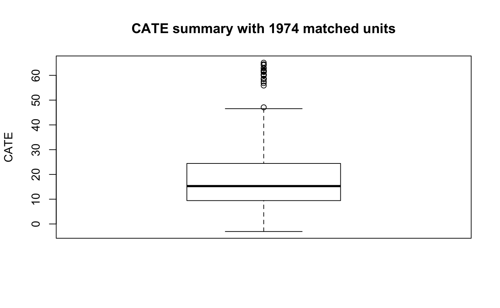

Apply the FLAME Algorithm to Synthetic Data
Jerry Chia-Rui Chang
2018-10-15
Source:vignettes/Synthetic_Data.Rmd
Synthetic_Data.RmdThis vignette demonstrates how to implement the FLAME package. We applied bit vectors and database systems implementation to synthetic data.
Generate synthetic data
Data_Generation function creates simulated data with specific characteristics and known treatment effects. The following function is used to generate synthetic data.
\[
\begin{aligned}
& y = \sum_{i}\alpha_{i}x_{i} + T\sum_{i}\beta_{i}x_{i} + T \cdot U \sum_{i=1..5, \gamma = 1...5, \gamma > i} x_{i}x_{\gamma}
\end{aligned}
\] \(T \in \{0,1\}\) indicates whether a unit is in the treated group or in the control group. \(\alpha_{i} \sim N(10s, 1)\) with \(s \sim Uniform\{-1,1\}\), \(\beta_{i} \sim N(1.5,0.15)\), and \(U\) represents the coefficient of non-linear term. We applied Data_Generation function to generate 1000 treated units and 1000 control units, where U = 5 with 10 important covariates and 5 unimportant covariates. Assume holdout training data is the same as input data.
data <- FLAME::Data_Generation(num_control = 1000, num_treated = 1000,
num_cov_dense = 10, num_cov_unimportant = 5, U = 5)
holdout <- data
head(data)
#> x1 x2 x3 x4 x5 x6 x7 x8 x9 x10 x11 x12 x13 x14 x15 outcome treated
#> 1 1 0 0 0 0 1 1 1 0 0 1 1 0 0 0 -25.326354 0
#> 2 1 1 1 1 0 0 0 1 0 1 0 1 1 1 0 5.172278 0
#> 3 1 0 0 0 0 1 1 0 1 0 1 0 1 1 0 -11.501727 0
#> 4 0 0 0 1 1 0 1 1 1 1 0 0 1 1 0 8.840892 0
#> 5 1 1 1 0 1 1 0 0 0 0 1 0 0 0 1 3.435872 0
#> 6 0 1 0 0 1 0 0 0 1 1 1 0 1 1 1 20.460055 0Bit vectors implementation
We run FLAME_bit function with the following command. The required inputs include (1) input data and (2) holdout training set. Note that if we would like to compute the variance of each matched group, please specify optioanl argument compute_var = TRUE. Since the variance of each matched group is the sum of the variance of the treated units and the variance of the control units, each matched group should contain at least 2 treated units and 2 control units. Therefore, it is expected that less matched units will be found in earlier iteration.
result_bit <- FLAME::FLAME_bit(data = data, holdout = holdout, compute_var = FALSE)
#> [1] "number of unmatched units = 1938"
#> [1] "number of unmatched units = 1873"
#> [1] "number of unmatched units = 1784"
#> [1] "number of unmatched units = 1568"
#> [1] "number of unmatched units = 1321"
#> [1] "number of unmatched units = 1012"
#> [1] "number of unmatched units = 688"
#> [1] "number of unmatched units = 453"
#> [1] "number of unmatched units = 280"
#> [1] "number of unmatched units = 231"
#> [1] "number of unmatched units = 150"
#> [1] "number of unmatched units = 108"
#> [1] "number of unmatched units = 68"
#> [1] "number of unmatched units = 68"
#> [1] "number of unmatched units = 26"The outputs contain four elements, including (1) list of covariates FLAME performs matching at each iteration, (2) list of dataframe showing matched groups’ sizes, conditional average treatment effects (CATEs), and variance (if compute_var = TRUE) at each iteration, (3) matching quality at each iteration, and (4) the original data with additional column matched, indicating the number of covariates each unit is matched. If a unit is never matched, then matched will be 0.
Database systems implementation
For database systems implementation, FLAME package provides two versions - SQLite and PostgreSQL. PostgreSQL version requires installation of external database system and has faster implementation. SQLite version does not require external database system but its implementation is slower than the PostgreSQL version.
PostgreSQL
If your computer does not have PostgreSQL installed, install from here. For connecting and setup of PostgreSQL server, please refer to tutorial.
Connect to PostgreSQL in R and run FLAME_PostgreSQL function with the following command. Note that it is required to name the connection as db and disconnect it once done. The required inputs include (1) database connection (db), (2) input data, and (3) holdout training set. In this case, we also specify compute_var = TRUE. The outputs of FLAME_PostgreSQL are the same as the outputs of FLAME_bit.
# Connect to PostgreSQL
drv <- dbDriver('PostgreSQL')
# Name the connection as db
db <- dbConnect(drv, user="postgres", dbname="FLAME", host='localhost',
port=5432, password = 'new_password')
# Run FLAME_PostgreSQL
result_PostgreSQL <- FLAME::FLAME_PostgreSQL(db = db, data = data, holdout = holdout, compute_var = FALSE)
#> [1] "number of unmatched units = 1938"
#> [1] "number of unmatched units = 1873"
#> [1] "number of unmatched units = 1784"
#> [1] "number of unmatched units = 1568"
#> [1] "number of unmatched units = 1321"
#> [1] "number of unmatched units = 1012"
#> [1] "number of unmatched units = 688"
#> [1] "number of unmatched units = 453"
#> [1] "number of unmatched units = 280"
#> [1] "number of unmatched units = 231"
#> [1] "number of unmatched units = 150"
#> [1] "number of unmatched units = 108"
#> [1] "number of unmatched units = 68"
#> [1] "number of unmatched units = 68"
#> [1] "number of unmatched units = 26"
# Disconnect from db
dbDisconnect(db)
#> [1] TRUESQLite
Connect to a temporary database in R and run FLAME_SQLite function with the following command. Note that it is required to name the connection as db. The required inputs include (1) database connection (db), (2) input data, and (3) holdout training set. In this case, we also specify compute_var = TRUE. The outputs of FLAME_SQLite are the same as the outputs of FLAME_bit and FLAME_PostgreSQL.
#Name the connection as conn
db <- dbConnect(SQLite(),"tempdb")
#Run FLAME_SQLite
result_SQLite <- FLAME::FLAME_SQLite(db = db, data = data, holdout = holdout, compute_var = FALSE)
#> [1] "number of unmatched units = 1938"
#> [1] "number of unmatched units = 1873"
#> [1] "number of unmatched units = 1784"
#> [1] "number of unmatched units = 1568"
#> [1] "number of unmatched units = 1321"
#> [1] "number of unmatched units = 1012"
#> [1] "number of unmatched units = 688"
#> [1] "number of unmatched units = 453"
#> [1] "number of unmatched units = 280"
#> [1] "number of unmatched units = 231"
#> [1] "number of unmatched units = 150"
#> [1] "number of unmatched units = 108"
#> [1] "number of unmatched units = 68"
#> [1] "number of unmatched units = 68"
#> [1] "number of unmatched units = 26"
#Disconnect from db
dbDisconnect(db)Summary & Compare Outputs
We compare the results of bit vectors, PostgreSQL, and SQLite implementations, where all three should yield the same outputs.
- Apply summary function to examine the number of matched units, average treatment effect, and the conditional average treatment effect (CATE) of each matched group in boxplot.
FLAME_summary(result_bit)
#> [1] "Number of units matched = 1974"
#> [1] "Average treatment effect = 19.6297775008364"
FLAME_summary(result_SQLite)
#> [1] "Number of units matched = 1974"
#> [1] "Average treatment effect = 19.6297775008364"
FLAME_summary(result_PostgreSQL)
#> [1] "Number of units matched = 1974"
#> [1] "Average treatment effect = 19.6297775008364"
- The covariates FLAME performs matching at the \(10^{th}\) iteration.
result_bit[[1]][[10]] # bit vectors
#> [1] "x2" "x3" "x4" "x5" "x6" "x9"
result_PostgreSQL[[1]][[10]] #PostgreSQL
#> [1] "x2" "x3" "x4" "x5" "x6" "x9"
result_SQLite[[1]][[10]] #SQLite
#> [1] "x2" "x3" "x4" "x5" "x6" "x9"- Each matched group’s size, conditional average treatment effect (CATE), and variance at the \(10^{th}\) iteration. Note that if we specify
compute_var = FLASEwhen running FLAME, the variance column will not be in the output.
head(result_bit[[2]][[10]]) # bit vectors
#> x2 x3 x4 x5 x6 x9 effect size
#> 1 0 1 0 0 0 0 -0.8076 4
#> 2 1 0 0 1 0 1 0.2418 6
#> 3 0 0 1 0 0 0 4.5022 8
#> 4 0 0 1 1 0 0 8.8697 7
#> 5 1 0 0 0 0 0 11.0326 2
#> 6 0 1 0 1 0 0 15.6090 9
head(result_PostgreSQL[[2]][[10]]) #PostgreSQL
#> x2 x3 x4 x5 x6 x9 effect size
#> 1 1 0 0 0 0 0 -0.8076 4
#> 2 0 0 1 0 1 0 0.2418 6
#> 3 0 1 0 0 0 0 4.5022 8
#> 4 0 1 1 0 0 0 8.8697 7
#> 5 0 0 0 0 0 1 11.0326 2
#> 6 1 0 1 0 0 0 15.6090 9
head(result_SQLite[[2]][[10]]) #SQLite
#> x2 x3 x4 x5 x6 x9 effect size
#> 1 1 0 0 0 0 0 -0.8076 4
#> 2 0 0 1 0 1 0 0.2418 6
#> 3 0 1 0 0 0 0 4.5022 8
#> 4 0 1 1 0 0 0 8.8697 7
#> 5 0 0 0 0 0 1 11.0326 2
#> 6 1 0 1 0 0 0 15.6090 9- Matching Quality at each iteration
result_bit[[3]] # bit vectors
#> [1] -15.15 -15.14 -15.13 -15.12 -15.12 -16.27 -25.09 -42.76
#> [9] -60.83 -102.19 -145.21 -200.51 -264.97 -345.27
result_PostgreSQL[[3]] #PostgreSQL
#> [1] -15.15 -15.14 -15.13 -15.12 -15.12 -16.27 -25.09 -42.76
#> [9] -60.83 -102.19 -145.21 -200.51 -264.97 -345.27
result_SQLite[[3]] #SQLite
#> [1] -15.15 -15.14 -15.13 -15.12 -15.12 -16.27 -25.09 -42.76
#> [9] -60.83 -102.19 -145.21 -200.51 -264.97 -345.27